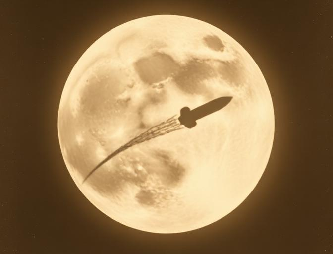
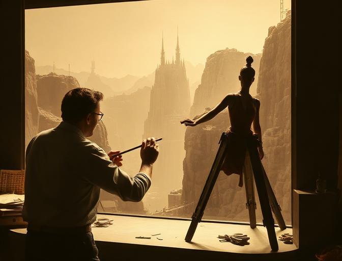
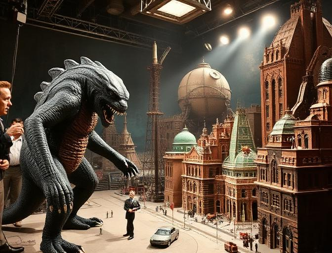

Before the 70s
Special effects have existed since the very dawn of cinema. Long before CGI, generations of artists and engineers built impossible worlds through ingenuity, craftsmanship, and sheer determination. Here's how the art evolved from parlor tricks to the doorstep of the 1970s revolution.
Landmark Films

King Kong

Forbidden Planet

2001: A Space Odyssey
The Evolution of Effects

Early Camera Tricks
Georges Méliès pioneered trick photography in the 1890s using double exposure, dissolves, and hand-painted frames. Silent-era filmmakers experimented with in-camera effects like forced perspective, reverse cranking, and substitution splices to conjure the impossible.

Matte Paintings & Miniatures
Hollywood's golden age brought glass matte paintings, rear projection, and detailed miniature sets. King Kong (1933) combined stop-motion with live action through meticulous optical compositing, while The Wizard of Oz (1939) used Technicolor matte work to bring Oz to life.

Practical Effects Expand
The sci-fi boom drove innovation: Forbidden Planet (1956) featured hand-drawn animated energy effects, while monster films used elaborate suits and miniature cities. Kubrick's 2001: A Space Odyssey (1968) pushed front projection and slit-scan photography to create visuals that still astonish today.
Key Techniques Before the 70s
Detailed small-scale replicas filmed to appear full-size, used from King Kong's jungle to 2001's space stations.
Painted glass plates placed between the camera and set to extend environments far beyond what was physically built.
Frame-by-frame movement of articulated puppets — the backbone of creature effects from the 1930s through the 1960s.
Layering multiple film strips through an optical printer to combine live action, mattes, and effects into a single frame.
Challenges Filmmakers Faced
Effects artists worked with basic motors, rubber, and plaster — no computers, no digital aids.
A single composite shot could take days of painstaking alignment and re-photography.
Studios often slashed effects budgets, forcing artists to innovate with whatever was on hand.
Laying the Foundation
Every technique pioneered before 1970 — stop-motion puppetry, glass matte paintings, optical compositing, and miniature model work — became the building blocks that 1970s filmmakers would refine, combine, and push to unprecedented heights.